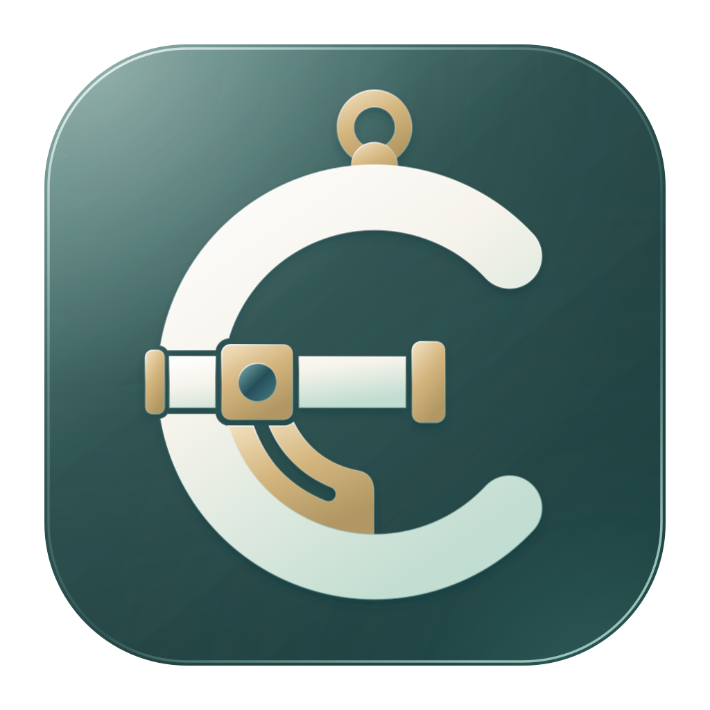
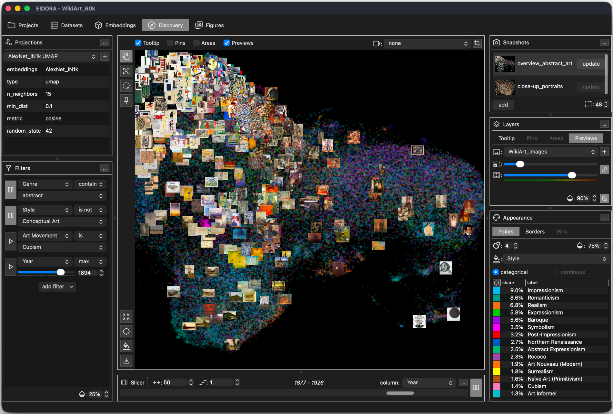

macOS
Apple Silicon DMGDownload available at release
Intel DMGDownload available at release

Open-source desktop research software for the visual exploration of embedding spaces in cultural data.
Import or compute vector embeddings for your collections, interactively explore their projections, and prepare figures in one local research environment. Connect computational results with source material and metadata to compare views and document your analysis.
Installer links will appear here when the public release is available. Release notes
A closer look
Explore projections through points and thumbnails. Inspect individual items and use metadata to investigate patterns across your collection.

Five connected workspaces
Use the graphical interface from data preparation to figures, or bring your own embeddings or projection coordinates straight into visual exploration. Export results for use in other tools.
Register media sources, link them to metadata, and prepare thumbnails. Keep collection items connected to their source material.
Import, search, and edit metadata. Update item descriptions and organize groups for use throughout your analysis.
Import your own vectors or compute them locally with compatible Model Zoo packages, including multimodal models. Compare embedding datasets, cluster vectors, and reuse cluster memberships as groups.
Compute or import two-dimensional projections. Use metadata to filter and color points and thumbnails, add annotations, and save views as snapshots.
Arrange saved views into single- or multi-panel figures. Refine captions, legends, grids, and annotations. Export figures and animations, and save compositions for revision.
From overview to individual items
Move between a collection overview and individual items. Investigate how patterns relate to historical periods, creators, or curatorial categories.
Two-dimensional projections can distort relationships in the embedding space. Interpret patterns alongside the model, projection settings, source material, and contextual metadata.
Projects preserve metadata, source references, results, settings, and saved views. Restore snapshots to continue an analysis, compare views, or prepare a figure.
Use the Slicer to move through ranges of numerical metadata, such as years. The visible items change while projection coordinates remain fixed.
Methods reports assemble recorded model and algorithm details, parameter settings, and bibliographic references for methods descriptions and figure captions.
An open research tool
Find installation guidance, follow development, and contribute to the project.
Explore the code, report an issue, or contribute on GitHub.
Open repository 02 / DevelopmentFind published releases and the changes that accompany them.
View release historyA guide to installation, your first project, and exploring a collection.
Guide coming at releaseCitation details for acknowledging EIDORA in your research.
Citation forthcomingmacOS 15 or later on Apple Silicon and Intel, Windows 10 or 11 (x64), and Linux x64. Linux requirements and installation instructions will accompany the public release.
No. Use the graphical interface to compute or import embeddings, explore projections, and compose figures. If you already work with other tools, import your embeddings or projection coordinates for visualization.
Analyses run on your computer, so collection data do not need to be uploaded to a server. Model discovery and downloads use online services; installed models run locally.
A map can reveal neighborhoods, gradients, and unusual items worth investigating. These patterns reflect computational choices and can help you develop research questions through close examination of the material.
Yes. EIDORA’s source code is available under the MIT license. The project repository includes information for developers and contributors.